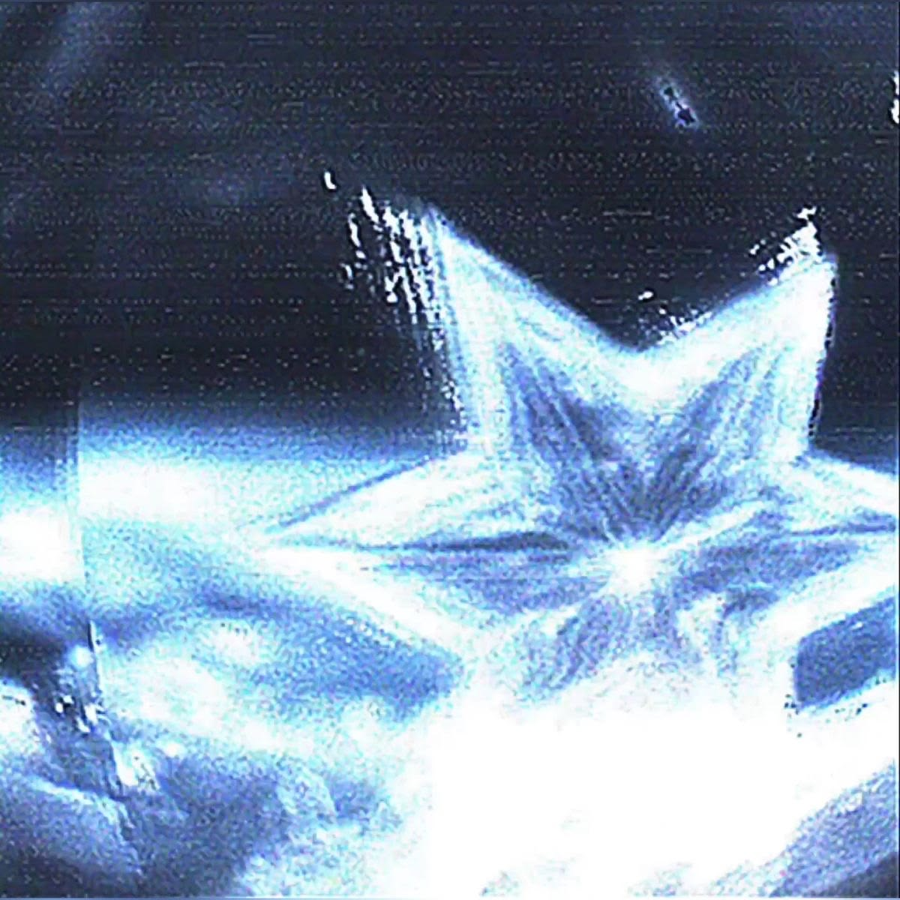

-
PEACE OF BLUE
Surrounded by flowing shades of blue and black, a solitary figure drifts in complete stillness, free from the noise of the world. The absence of facial features allows the figure to become a reflection of anyone searching for comfort, healing, or self-discovery. The painting represents the peace that can only be found by embracing silence and accepting one's inner emotions. READ MORE >>
-
RED HEARTED BUNNY
A small rabbit stands beneath a sky of endless blue, wearing a stern expression while a quiet heart glows upon its forehead. Though it appears guarded, the heart symbolizes the warmth and tenderness hidden beneath its hardened exterior. The painting reminds us that even those who seem distant often carry love, vulnerability, and hope within them.
READ MORE >> -
IN THE ZEN OF BLUE
White koi glide effortlessly through deep blue waters, moving in quiet harmony beneath the surface. Their gentle motion reflects balance, patience, and the beauty of surrendering to life's natural flow. The painting invites the viewer to release unnecessary burdens and find serenity in the calm rhythm of the present moment.
READ MORE >>


THE BLUES WE HIDE DEEP IN OUR HEARTS
Beneath every heartbeat rests an endless blue, carrying memories, silent sorrows, and the echoes of dreams left unfinished. Though life may leave the heart bruised and fragmented, its color never fades. Every wound becomes a reminder that beauty is not found in perfection, but in the courage to continue shining, even after being broken.